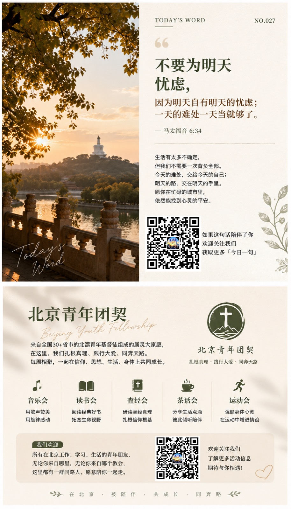

扎根真理 · 践行大爱 · 同奔天路
北京青年基督徒的聚会平台，在这里遇见同路人。

我们是来自三十多个省市、在北京工作的年轻基督徒组成的属灵大家庭。 因着同一位救主相遇，彼此陪伴，共同走信仰的道路。
不分宗派，只求在基督里合一；不论背景，只愿在爱中彼此接纳。
22 章 · 404 节词块闯关，与读经同源，边玩边背。
按卷逐章打开经文，梳理救赎历史。
圣经人物故事与灵性分享，随时收听。
生命的光照与回响，彼此勉励同奔天路。
愿我们在主爱中，彼此照亮，同奔天路